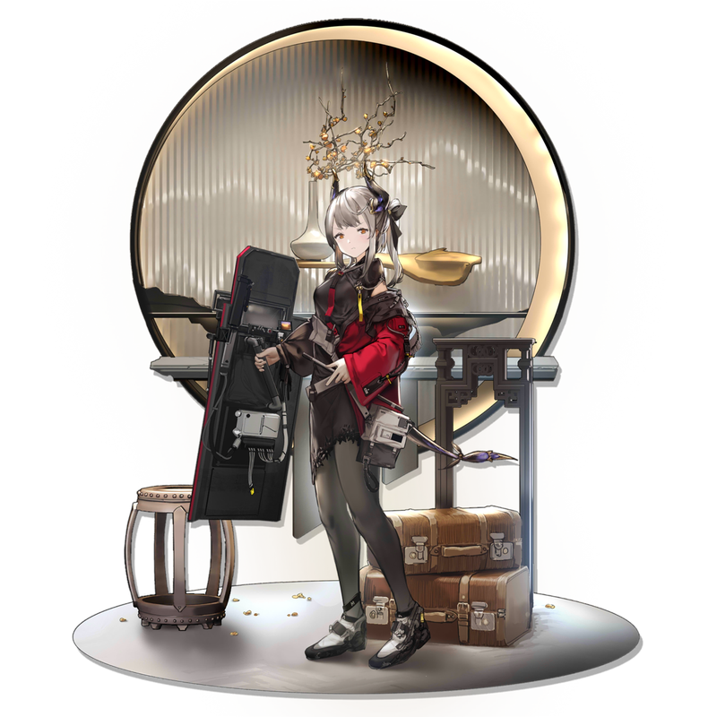
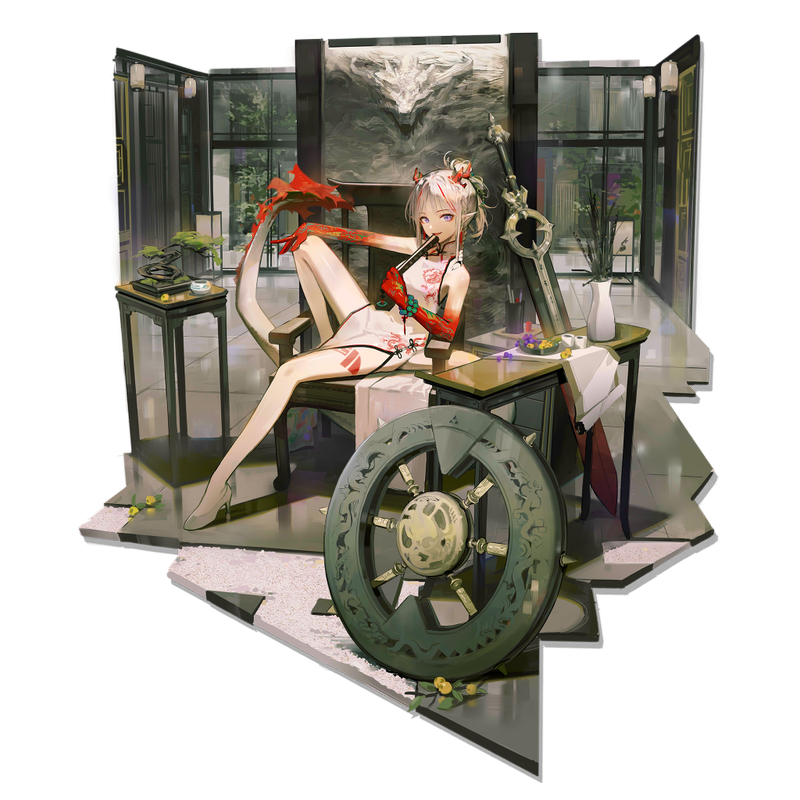
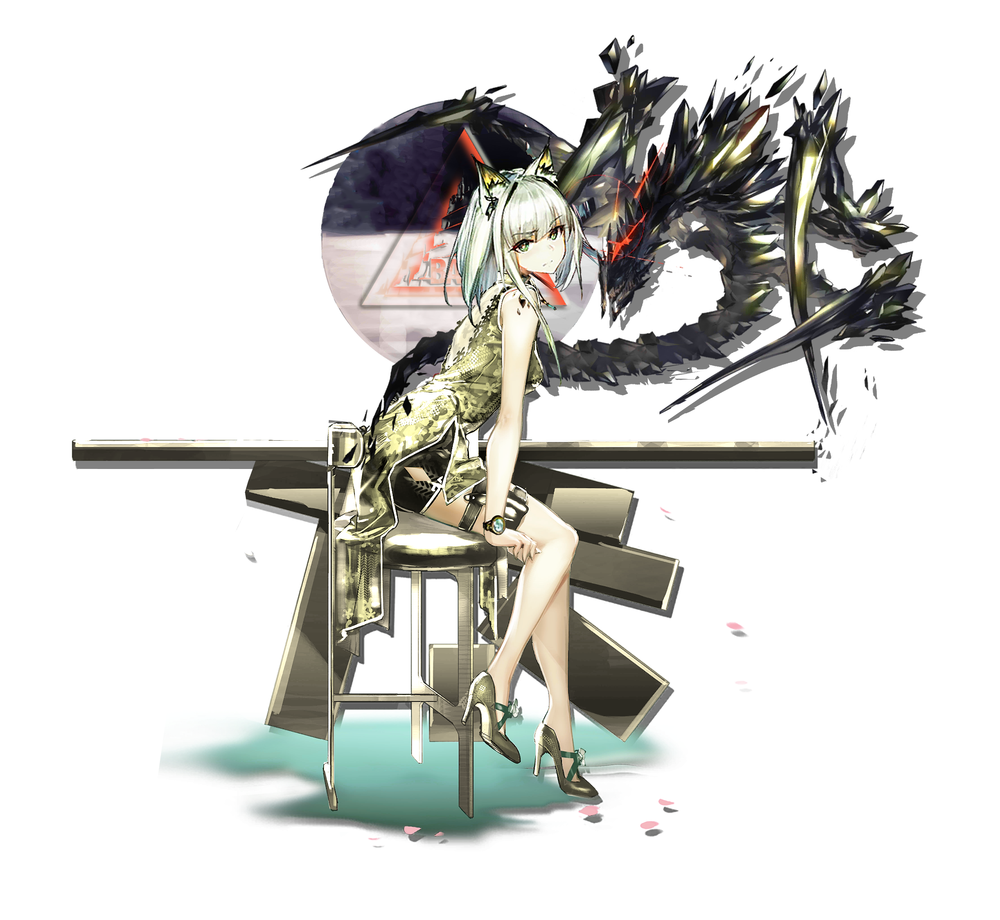

<!doctype html>
<html>
<head>
<meta charset="utf-8">
<title>Midterm</title>
<link href = "css/page1_from_0324.css" rel="stylesheet" type="text/css">
<link rel="shortcut icon" href="imgs/Q/鈴蘭.png" type="img" />
</head>

<body><div class="background">
    <!--nav-->
    <header>
        <nav>
            <ul>
                <li> <a href="#" >ABOUT</a></li>
                <li> <a href="index_page2.html" >ART WORK</a></li>
            </ul>
        </nav>
    </header>
    
    <!--section : banner-->
    <section>
            <div class="left">
                <div class="anitext" style="font-size:5vw;"> Arknights</div>
            </div>
            <div class ="right">
                <div class="banner">
                    <div class="anitext2" style="font-size:5vw;" >Arknights</div>
                </div>
            </div>
   </section>

    <!--aside : text description-->
    <article>
        <aside>
            <div class="desbox2" >
                <h1> 【洪爐示歲】</h1>
                <p> 台服活動時間：2/4 ~ 2/18 <br>
                【 限定尋訪・地生五金 】<br>
                ◆ 新增幹員：【 年 】僅可在本次【 限定尋訪・地生五金 】中獲取，不加入任何【 標準尋訪 】。<br>
                【 限時時裝 0011系列 新春時裝】<br>
                    ．「春竜」雷蛇 ．「富貴榮華」詩懷雅．「歲紅霞」陳<br>
                【 同系列預告】<br>
                ．「樂逍遙」年 ．「百面郎中」阿．「ㄧ介車伕」吽<br>
                </p>
                <div class ="fadebox">
                    <a href="#show">More</a>
                </div>
            </div>
        </aside>
    </article>


    <!--characters-->
    <article id="show">
        <!--box1-->
        <div class = "card"><div class="box2">
            <div class="imgbox">
                
            </div>
            <h3><br>雷 蛇</h3>
            <p> <br> [ 春竜 ]<br><br> </p>
        </div></div>

        <!--box2-->
        <div class = "card"><div class="box2">
            <div class="imgbox">
                
            </div>
            <h3><br>陈</h3>
            <p> <br> [ 歲紅霞 ]<br><br> </p>
        </div></div>
        <!--box3-->
        <div class = "card"><div class="box2">
            <div class="imgbox">
                
            </div>
            <h3><br>年</h3>
            <p> <br>[ 樂逍遙 ]<br><br> </p>
        </div></div>
    </article>

    <!--aside : text description-->
    <article>
        <aside>
            <div class="desbox2" >
                <h1> 【深悼】</h1>
                <p> 陸服活動時間：5/1 ~ 5/15 <br>
                【 限定尋訪・慶典 】<br>
                ◆ 新增幹員：【 浊心斯卡蒂 】僅可在本次【 限定尋訪・慶典 】中獲取，不加入任何【 標準尋訪 】。<br>
                    ★★★★★★：浊心斯卡蒂 [限定] ｜ 凯爾希（佔6★出率的70%）<br>
                    &nbsp &nbsp &nbsp &nbsp &nbsp &nbsp &nbsp &nbsp &nbsp &nbsp &nbsp
                    W [限定]（在6★剩餘出率30%中以5倍權值提升）<br>
                    ★★★★★：赤冬（佔5★出率的50%<br>
                </p>
                <div class ="fadebox">
                    <a href="#intro">More</a>
                </div>
            </div>
        </aside>
    </article>

    <!--article 1-->
    <article>
        <!--aside : text description-->
        <div class="aside2" id="intro">
            <div class ="wraptext">
                <div class="imgbox">
                    
                </div>
                
                <h3> 二週年限定干员。浊心斯卡蒂</h3>
                <p>
                <br>◆ 影片：[明日方舟是一款我的问题，但斯卡蒂永遠是我的老婆]<br>
                    ◆ 來源：喪心病狂的網友<br>
                <div class="highlight"> ◆ 提醒：湊字數用請勿認真觀看</div></p><br>
                <p>
                我他的妈是傻逼，纯種傻逼！！！
                看你妈的創造營成團夜，我他妈錯過了明日方舟二週年！
                斯卡蒂！！！老婆！！！異格浊心斯卡蒂！！！我的天那！！！這是我能看到的嗎<br>
                我的天那我的天我失去语言能力了，我现在渾身颤抖哇哇大哭，红色的斯卡蒂！！！
                是我的老婆斯卡蒂！！！還他娘的有 Live 2D！！！<br><br>
                谢谢鹰角，谢谢鹰角，这下斯卡蒂就他娘的站起来了啊！一站成名站到最高點了啊！
                救命啊！！！全體起立！！！他妈的什么忧郁蓝调什么先蒂斯卡蒂就他娘的是最吊的！<br>
                Live 2d 我的天那動起来的老婆你就是我最活生生的老婆，太好看了斯卡蒂不再孤獨了斯卡蒂
                你不再孤獨了因为我来了！！！！！<br><br>
                攪動潮汐之剑什么潮汐什么巨劍，斯卡蒂直接用无雙的美貌刺入我的心房攪動我的脑浆让我为她痴为她狂为她哐哐撞大墙忘记了自己的名字只记得我有一个老婆叫斯卡蒂<br>
                </p>
            </div>
        </div>

        <!--aside : text description-->
        <div class="aside2">
            <div class ="wraptext2">     
                                
                <h3> 二週年干员。凯尔希</h3>
                <p>
                <br>◆ 穿上陳旗袍的凱太后<br>
                    ◆ 來源：網友魔改<br>
                <div class="highlight">  ◆ 職業：醫療幹員</div></p><br>
                <p>
                在二测中，属性較同職業低，但攻擊范围 +3 格 ， 且可召唤MON3TR。<br>
                MON3TR的攻击极高，精二后再部署时间25s，且携带技能可切换为<br>
                【二技能】 --> 挡三群攻近衛：Mon3tr攻擊附近所有敌人，再部署时间 -10s ；凯尔希治疗量的
                 150%会治疗Mon3tr。<br>
                【三技能】 --> 群体法师：被动效果：Mon3tr切换为远程群体魔法攻击，每次攻击额外损失2%最大生命值；开启技能后，凯尔希攻击力提高100%，并可以治疗Mon3tr。<br>
                <br>
                &nbsp &nbsp &nbsp &nbsp &nbsp &nbsp &nbsp &nbsp &nbsp &nbsp &nbsp &nbsp▢ &nbsp &nbsp &nbsp &nbsp &nbsp &nbsp &nbsp &nbsp &nbsp ▢ ▢ ▢ ▢ ▢<br>
                &nbsp &nbsp &nbsp &nbsp &nbsp &nbsp &nbsp &nbsp &nbsp &nbsp ▢ ■ ▢ &nbsp &nbsp &nbsp &nbsp &nbsp &nbsp &nbsp &nbsp■ ▢ ▢ ▢ ▢<br>
                &nbsp &nbsp &nbsp &nbsp &nbsp &nbsp &nbsp &nbsp &nbsp &nbsp &nbsp &nbsp▢ &nbsp &nbsp &nbsp &nbsp &nbsp &nbsp &nbsp &nbsp &nbsp ▢ ▢ ▢ ▢ ▢<br>
                </p>
            </div>
        </div>
    </article>
    
    <!--footer-->
    <footer>
        &copy All Rights Reserved.<br><br>
    </footer>
</div></body>
</html>
